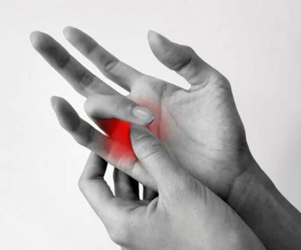
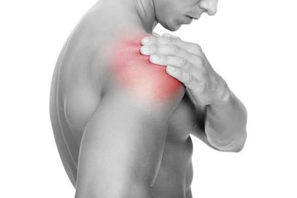
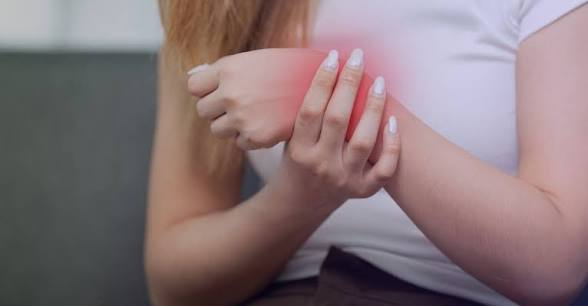
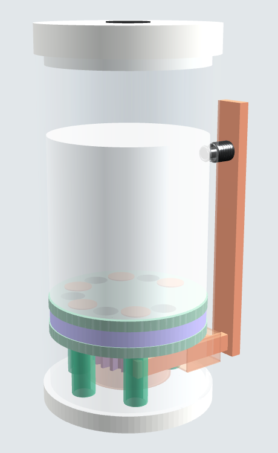
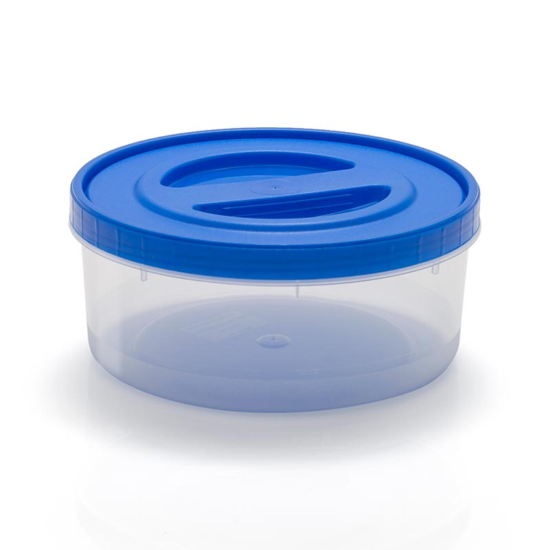

¿Qué agarre es mejor para la artritis?
De los métodos convencionales a nuestro método.

Girar duele en la base del pulgar (AAOS, s. f.), que carga 12 veces la fuerza aplicada (Cooney y Chao, 1977).

Mueve brazo y hombro una y otra vez, y no controla la dosis.

Carga la muñeca doblada hacia atrás.

Reparte la fuerza: solo pide un 2–3 % de la fuerza de la mano (Mathiowetz et al., 1985).
Conclusión: apretar con 4 dedos sosteniendo el salero es lo que menos duele. Por eso Dosis 5 funciona así.
Usuario ideal: una pareja recién casada que recibe a la familia
- En 2024 se casaron 568.395 parejas en Turquía, con 26 a 28 años de media (TÜİK, 2025).
- La familia se ve seguido: el 56,7 % de los mayores de 60 recibe a sus hijos varias veces por semana (TÜİK, 2022).
Casi la mitad de las personas con artritis tiene más de 65 años (Fallon et al., 2023).
→ Se aprieta con 4 dedos, sin girar.

Los gérmenes pasan de las superficies a los dedos (Winther et al., 2007).
→ Hermético: nadie toca la sal.
En Turquía se comen 14,8 g de sal al día y el 41 % se añade en casa (Erdem et al., 2017). La OMS pide menos de 5 g (WHO, 2012).
→ 0,5 g por presión: 10 presiones = máximo del día.